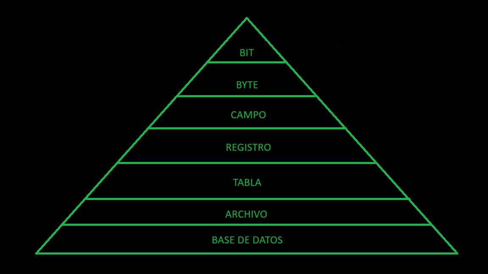
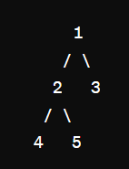
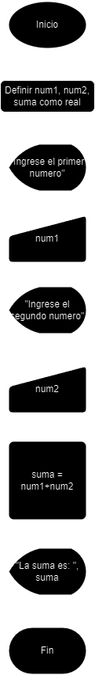

Desarrollo Web es todo los conocimientos que fueron desarrollados durante el curso que el Colegio Tecnico Don Bosco nos afrecio, ¿Que conocimientos se desarrollaron? Se desarrollo la adaptabilidad de nuevos lenguajes y aprender la logica de estos mismos, incluso conceptos basicos. Aqui algunos ejemplos:
Conjunto ordenado y finito de operaciones que permite hallar la solución de un problema.
Hacer una taza de te:
| 1. Pon la bolsa de te en la taza |
| 2. Llena el hervidor de agua |
| 3. Hierve el agua |
| 4. Pon un poco de agua hervida en la taza |
| 5. Añade leche a la taza |
| 6. Añade azucar a la taza |
| 7. Mezcla todo con una cuchara |
| 8. Toma de la taza de te |
Combinaciones de números, variables y operaciones Matematicas, como la:
Son expresiones matematicas que terminan con un valor booleano True, False
Son operadores que comparan 2 valores y de estos mismo devuleven un valor booleano
Asigna un valor a una variable
Es la capicidad que tiene un programa de almacenar una informacion en la memoria del ordenador con la intencion de volver a utilizarla mas adelatne. Dicho de manera formal, una variable es un nombre que hace referencia a un valor
Un subproceso es un extracto de código que se llama de atreves del código principal y es parecido o igual al algoritmo principal, estos se pueden Definir e Invocar
Luego estos se pueden dividir en otras categorias:
Es un algoritmo que hace o realiza ciertas tareas especififcas
Es un algoritmo que a la hora de ser llamado este devuelve un valor especifico
Es una forma de expresar los distintos pasos que va realizar un programa, de la forma más parecida a un lenguaje de programacion.
Su principal funcion es la de represntar por pasos la solución a un problema o algoritmo, de la forma más detallada posible utilizando un lenguaje cercano al de programacion.
Caracteristicas, ventajas y desventajas
| Caracteristicas | Ventajas | Desventajas |
|---|---|---|
| Metodo que facilita la programacion | Mejora la calidad en la resolución de problemas | Falta de normas |
| Forma facil de represntar el codigo | Puede llegar donde el diagrama de flujo no lo hace | |
| Independencia al codigo en el que se va escribir | Lenguaje sencillo y no estructurado | |
| Herramienta educativa interesante |
Una estructura de control se refiere a una ejecuccion linea por linea en el cual todas las declaraciones son ejecutados secuencialmente en el mismo orden que aparecen en el programa sin saltarse ninguna de ellas
Estas se ejecutan de manera lineal sin ningun tipo de freno de principio a fin
Son condiciones que hacen durante la ejecuccion del programa, hay una sola condicion que es la famosa "IF" pero a partir de esta se deriva de los siguientes usos:
Estas son las simples o la más comun que es una sola condicion como lo es:
Estas son condicionales que contienen el "IF" y el "Ifelse" y estas son así:
Estas son condicionales que contienen 2 o más condicionales en si misma como lo son:
Es una unidad que por si sola carece de sentido en si los datos tiene una cierta jerarquia y se le llama:
Esta es:
Es un direccion en la memoria, en palabras más complicadas son variables que apuntan a un solo dato en especifico
Se puede declarar una variable como int * p y se declara que guarda direcciones de memoria y para poder asignarla es con p = &x entonces de ahora para delante el puntero "p" solo estara apuntando, por ahora, a la variable x
Teniendo en cuenta lo anterior los punteros sirven para poder cambiar un valor de la variable a la cual está apuntando, entonces si *p=10 entonces cambiara el valor de la variable la cual este apuntando como lo es x
Se podria decir que es parecido a una variable pero los parametros son considerados como ciertos tipos
Se mantiene un valor, pero se hace una copia para que este sea modificado como se desee pero el original se mantiene igual
El valor original se modifica y cuando se vuelve a correr el algoritmo principal el valor se mantiene modificado
Son herramientas que organizan los datos de una forma facil y sencilla siendo desde datos de informacion unidimensionales o más
Tipos de Estructuras:
Una estructura FIFO (First In, First Out) es un tipo de estructura de datos en la que los elementos se insertan al final y se eliminan del principio. Es decir, el primer elemento que se inserta es el primero en ser eliminado.
Una estructura LIFO (Last In, First Out), también conocida como pila, es un tipo de estructura de datos en la que los elementos se insertan y eliminan siguiendo un principio de último en entrar, primero en salir. Es decir, el último elemento que se inserta es el primero en ser eliminado. Esto es similar a apilar platos en una bandeja, donde el último plato que se coloca es el primero que se retira.
Esta estructura de datos organiza los datos de una manera unidimensional como se muestra a continuacion:
| Posiciones | 0 | 1 | 2 | 3 | 4 | 5 |
Esta estructura de datos puede tener incluso 4 dimensiones pero para que no se nos complique a la hora de entender una matriz se podria decir que una matriz es un vector dentro de otro vector, a continuación se muestra una matriz bidimensional:
| 0.0 | 1.0 | 2.0 | 3.0 | 4.0 | 5.0 |
| 0.1 | 1.1 | 2.1 | 3.1 | 4.1 | 5.1 |
| 0.2 | 1.2 | 2.2 | 3.2 | 4.2 | 5.2 |
| 0.3 | 1.3 | 2.3 | 3.3 | 4.3 | 5.3 |
| 0.4 | 1.4 | 2.4 | 3.4 | 4.4 | 5.4 |
| 0.5 | 1.5 | 2.5 | 3.5 | 4.5 | 5.5 |
Esta estructura datos sirve para poder guardar multiples tipos de datos como lo es un dato real o un dato tipo integral o un dato tipo caracter sin hacer ningun tipo de conlficto, ademas que deja de una manera facil el acceso de este tipo de datos, como lo es un registro de una persona, a continuacion se muestra un registro comunente utilizado:
| Cedula | Nombre | Apellido 1 | Apellido 2 | Edad |
| 119610354 | David | Hernández | González | 18 |
Una lista enlazada es una estructura de datos que consta de nodos, donde cada nodo contiene un dato y una referencia (o puntero) al siguiente nodo en la secuencia. La gestión de la memoria en una lista enlazada implica la asignación y liberación de memoria para los nodos que la componen.
La variable cabecera (también conocida como "cabeza" o "head" en inglés) en una lista enlazada es un puntero que apunta al primer nodo de la lista. Su propósito principal es permitir el acceso rápido y eficiente al primer elemento de la lista enlazada.
1.Cuando se crea un nodo en una lista enlazada, se asigna memoria dinámicamente para almacenar el dato y el puntero al siguiente nodo. Esto se hace utilizando funciones como `malloc()` en lenguajes como C o C++, o `new` en C++. La cantidad de memoria asignada para cada nodo suele ser fija y determinada por el tamaño del tipo de dato almacenado y el tamaño del puntero.
2.Al agregar un nuevo elemento a la lista enlazada, se asigna memoria para un nuevo nodo y se actualizan los punteros apropiados para mantener la secuencia de la lista enlazada. Por ejemplo, al agregar un nodo al final de la lista, se actualiza el puntero del último nodo para apuntar al nuevo nodo.
3.Cuando se elimina un nodo de la lista enlazada, se libera la memoria asignada para ese nodo. Esto se hace utilizando funciones como `free()` en C o C++, o `delete` en C++. Al liberar la memoria de un nodo, es importante actualizar los punteros de los nodos adyacentes para mantener la integridad de la lista enlazada. Por ejemplo, si se elimina un nodo intermedio, el puntero del nodo anterior debe actualizarse para apuntar al nodo siguiente al nodo eliminado.
Todos aquellos puntos de conexión físicos o virtuales que te permiten crear, enviar y recibir toda aquella información que manejas cuando haces una búsqueda en Internet.
En una lista enlazada, la estructura del nodo contiene al menos dos campos principales que son fundamentales para su funcionamiento:
1.Dato (o Valor): Este campo almacena el dato o la información que se desea guardar en el nodo de la lista enlazada. Este puede ser de cualquier tipo de datos, dependiendo de la aplicación específica.
2.Puntero al Siguiente Nodo: Este campo es un puntero que apunta al siguiente nodo en la secuencia de la lista enlazada. Este puntero es lo que crea la "enlace" entre los nodos, permitiendo que la lista enlazada mantenga su estructura secuencial.
Un árbol binario es una estructura de datos jerárquica en la que cada nodo tiene como máximo dos nodos hijos, conocidos como hijo izquierdo y hijo derecho. Cada nodo puede tener cero, uno o dos hijos. La estructura de un árbol binario se asemeja a una estructura de árbol en la naturaleza, donde hay un nodo raíz que se ramifica en diferentes direcciones.
La altura de un árbol binario se refiere a la longitud máxima del camino desde la raíz del árbol hasta cualquier hoja. En otras palabras, la altura de un árbol binario es la longitud máxima de cualquier camino que comience en la raíz y termine en una hoja.
Por otro lado, el peso (o tamaño) de un árbol binario se refiere al número total de nodos en el árbol, incluyendo tanto nodos internos como hojas. Es decir, el peso de un árbol binario es la cantidad total de nodos que contiene.
Aquí hay un ejemplo de un árbol binario:
Un grafo es una estructura matemática que consiste en un conjunto de nodos (también llamados vértices) y un conjunto de aristas (también llamadas bordes) que conectan estos nodos entre sí. Los grafos se utilizan para representar relaciones entre objetos. Dependiendo de cómo estén conectados los nodos y las propiedades de las aristas, los grafos pueden tener diferentes características y aplicaciones.
Hay 2 tipos de grafos:
Un grafo completo es un tipo de grafo en el que cada par de nodos está conectado por una arista. Esto significa que no hay nodos aislados y que hay una arista que conecta cada par de nodos distintos en el grafo.
Un grafo completo dirigido es similar a un grafo completo, pero con la diferencia de que todas las aristas tienen una dirección específica.
En resumen, un grafo completo es aquel en el que todos los pares de nodos están conectados por una arista, mientras que un grafo completo dirigido es aquel en el que todos los pares de nodos tienen una arista dirigida que conecta ambos nodos en ambas direcciones.Son la representacion en imagen de un codigo, representando en paso a paso el como se puede ejecutar el mismo codigo
Aqui un ejemplo de un diagrama de flujo:
Los métodos de ordenamiento son algoritmos que realizan la operación de arreglar los registros de una tabla en algún orden secuencial de acuerdo a un criterio de ordenamiento. El ordenamiento se efectúa con base en el valor de algún campo en un grupo de datos. El ordenamiento puede estar dado de forma iterativa o recursiva según la naturaleza y forma de ejecución del mismo.
Ejemplo
El Ordenamiento de burbuja (BubbleSort) es un algoritmo de ordenamiento simple. El mismo funciona revisando cada elemento de la lista a ordenar con el que le sigue, cambiándolos de posición si están en un orden incorrecto (n>n+1). Es necesario repetir este proceso varias veces hasta que no se necesiten más cambios, lo que significa que la lista quedó ordenada. Un ejemplo de ordenamiento con bubblesort sería: